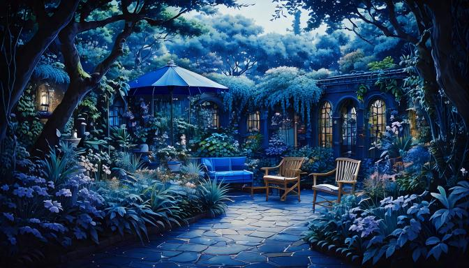

Ethereal echo

Peaceful Night

Natures call

Want to share your sounds with other students? Email us at
Relaxation101@ambientnoise.com
At relaxation 101, we aim to offer students a variety of ambient noises to ease the stress and mind. We encourage students to take a step back, and take care of their mental wellbeing
Want to share your sounds with other students? Email us at
Relaxation101@ambientnoise.com